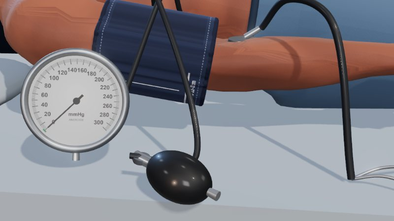
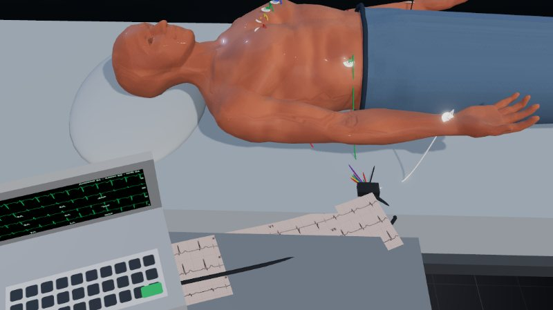
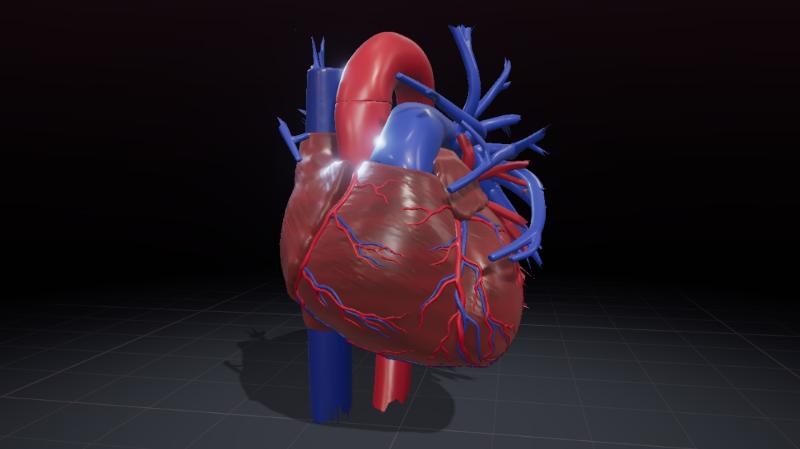
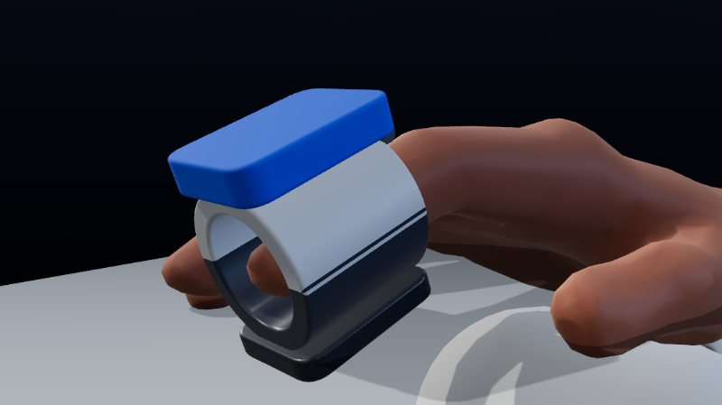
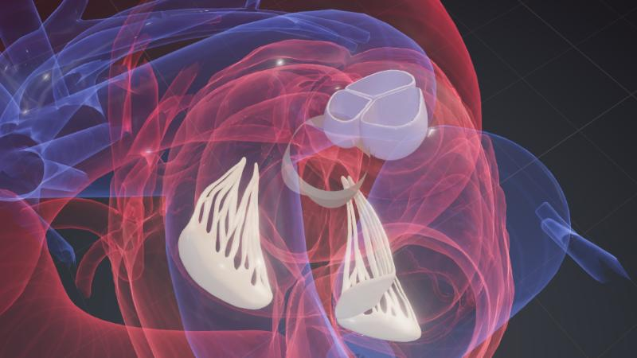

Demos
The human body, medical devices and clinical practice, opened up to explore. Real anatomical models; every demo runs in your browser and opens full screen.
LESSONSSimulators and lessons live in Tools
NursingTaking blood pressure
A real arm and an aneroid sphygmomanometer: inflate the cuff, hear the Korotkoff sounds and see how an automatic monitor measures.
Open demo → Medicine
MedicineThe defibrillator (AED)
An AED on a patient rebuilt with real skin, ribs and heart: pads, rhythm analysis, shock and high-quality CPR.
Open demo →
Biomedical engineeringThe 12-lead ECG
Place the 10 electrodes on a real chest and see how the heart's electrical vector looks different from each lead.
Open demo →
MedicineThe electric heart
A real human heart rebuilt from medical images. Follow the impulse from the sinus node to the Purkinje fibres, synced to an ECG.
Open demo →
Biomedical engineeringThe light that measures oxygen
A pulse oximeter opened up in 3D: red and infrared light cross the finger and the device works out saturation. Includes a quiz.
Open demo → Nursing
NursingDrop by drop
An IV set: roll the clamp, count drops for 15 seconds and solve mL/h and drops-per-minute orders.
Open demo → Medicine
MedicineHow you breathe
Real lungs, ribs and diaphragm. Breathe in, watch pressure and compliance, zoom into the alveoli and try a ventilator.
Open demo → Physiotherapy
PhysiotherapyThe knee as a lever
Real bones and quadriceps in a squat: watch kneecap forces grow with every degree of bend.
Open demo →
MedicineHeart valves and sounds
Real valves that open and close with each beat, S1 and S2, auscultation areas on real skin, and murmurs.
Open demo → Physiotherapy
PhysiotherapyGait, step by step
A real leg walks: the eight gait phases, hip, knee and ankle angles and the muscles at work.
Open demo → Biomedical engineering
Biomedical engineeringInside the ventilator
Real intubated lungs and a ventilator with pressure, flow and volume curves: modes, PEEP, plateau pressure and alarms.
Open demo →